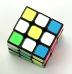
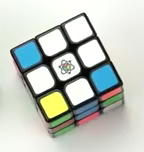
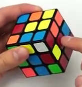
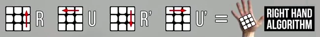
Ponavljaj dokler vogal na pravem mestu.
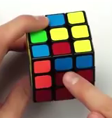
- če premikamo desno dol: odmik stran + algoritem R + zasuk kocke na drugo barvo + algoritem L (L' U' L U)
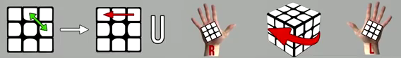
ali
- če premikamo levo dol: odmik stran + algoritem L (L' U' L U) + zasuk kocke na drugo barvo + algoritem R
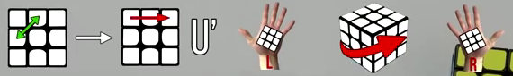
- primer 1
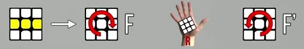
- primer 2
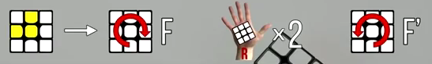
- primer 3
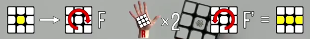
- leva 2 sta že na pravih pozicijah (barve so lahko zarotirane)
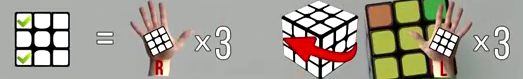
- diagonalna sta že na pravih mestih (barve so lahko za rotirane)
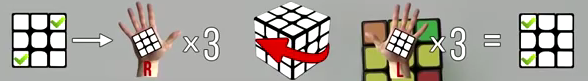
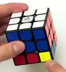
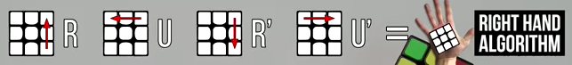
Ponavljaj, dokler željena rumena spodaj ni na spodnjem mestu na dnu. Ko je, končaj. Bela se lahko v tem času podre. Če je še kakšna rumena na desni strani, spodnjo ploskev, da imaš rumeno spet spodaj desno. Ponavljaj. Na koncu je spodaj rumena sestavljena.
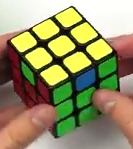
- en rob je že na pravem mestu

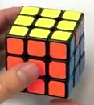
- noben rob še ni na pravem mestu - kar isti algoritem na katerikoli strani (rumena na vrhu) - potem dobimo en rob, ki bo na pravem mestu.
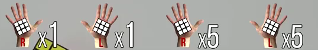